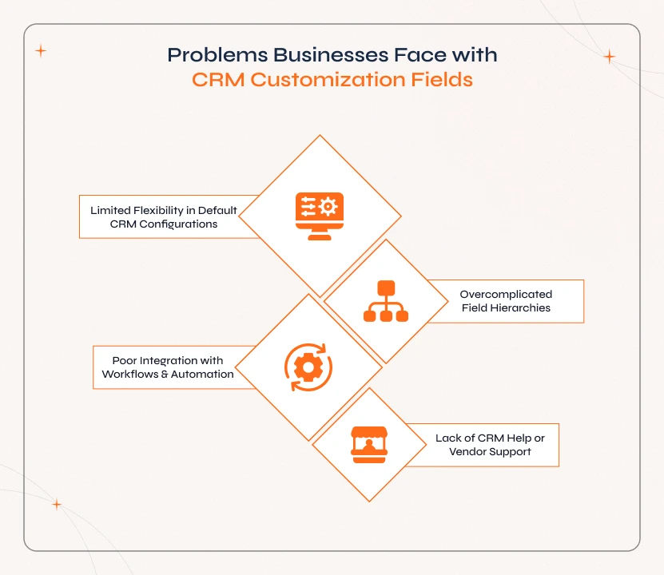
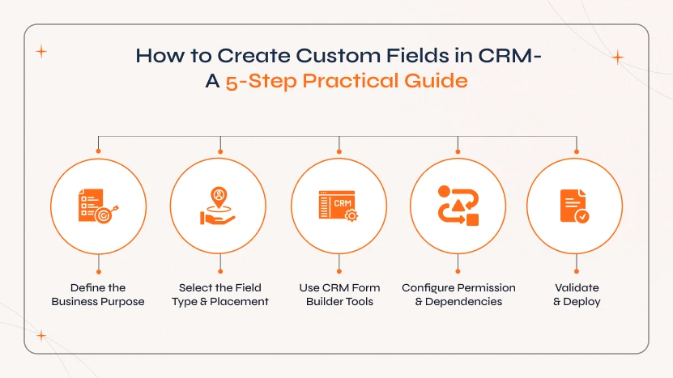
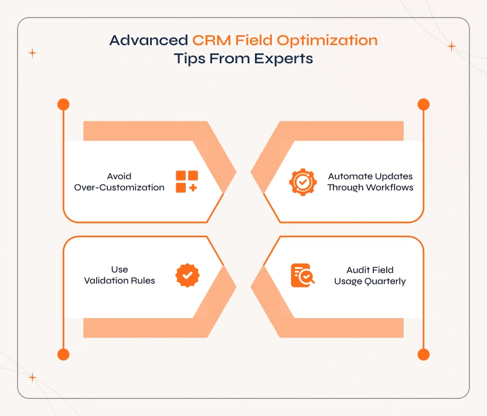
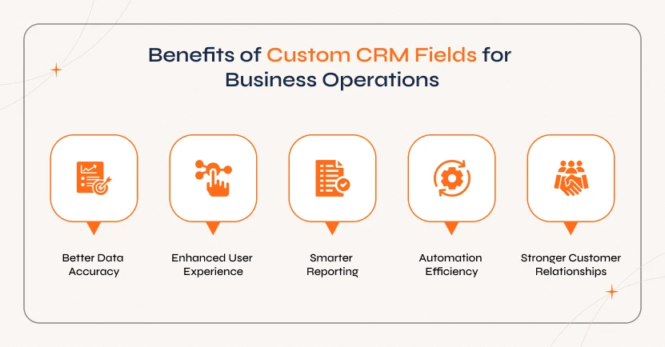
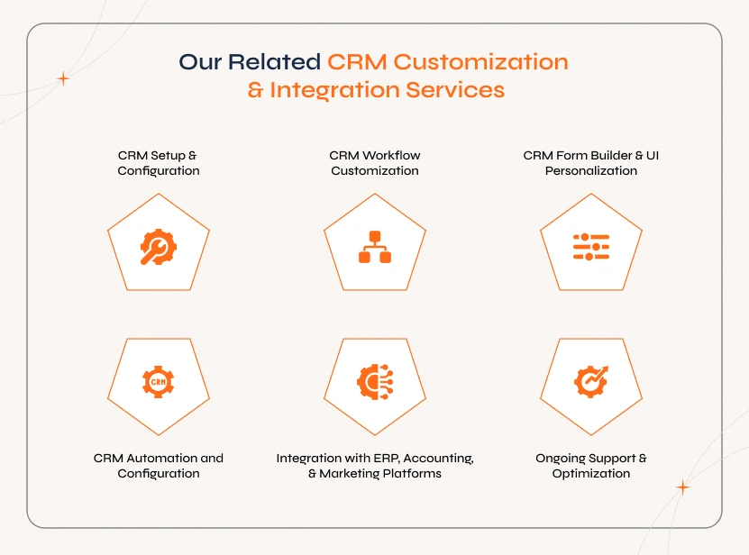

A lot of businesses are using their Customer Relationship Management, aka CRM, only at a basic level, using only their default settings and standard modules. Although sticking to the default options allows the system to run quickly, it often misses out on what it can truly do. Without customization, teams will have to deal with limited automation, rigid workflows, and incomplete data visibility that affects productivity and customer engagement. This is when the CRM customization services come into play and make the real difference.
With professional CRM customization services, it is possible to shape your CRM to fit your exact business needs. From CRM setup and configuration to custom fields, workflows, and dashboards, every other part can be designed in such a way that it matches how your teams actually work. You can even customize CRM software to make it more intuitive, efficient, and aligned with your goals. This way, you can manage data better, automate tasks, and build stronger customer relationships.
Here in this blog, we will walk you through how to create custom fields in your CRM, why customization matters, and share simple steps to make your CRM truly work for your business.
What are Custom Fields in CRM and How CRM Customization Services Enhance Them
Custom fields are nothing but the additional data fields you create in your CRM software system to capture the details that are specific to your business. While default options collects only general information, custom fields are unlike them and thus help you store the data that truly matters. It includes Preferred Service Type, Customer Budget, or Lead Source.
All of the fields make your CRM become more useful and personalized. With CRM user interface customization, you can easily add and view the most relevant details on each screen. Besides, with the CRM workflow customization, these fields can generate automated actions such as sending a follow-up email or assigning leads based on the chosen category.
Many times, CRM customization services are a part of broader software development or software modernization projects and that help you design and organize these fields in a way that simplifies the data entry, improves tracking, and supports accurate decision-making. In simpler terms, custom fields provide your CRM with the context, clarity, and control that are required to work the way your business does.
Make your CRM truly yours.
Add custom fields that capture what matters most and automate what slows you down.
What Happens When You Skip CRM Customization
Most of the CRMs work well right after the installation. However, this doesn't mean they fit your business system perfectly. If you rely only on the default setup, your teams often end up facing avoidable issues like:
- Incomplete customer profiles
- Repetitive manual data entry and reporting
- Disconnected workflows between teams &
- Low user adoption by sales or support staff
When the CRM system personalization isn't done properly, your platform will start functioning more like a basic contact list than a business growth engine. Every missed automation, untracked data point, and disjointed process will slow down your team's performance and decision-making.
By investing in CRM customization services, you can reshape your CRM in such a way that reflects your unique workflows, automate routine tasks, and connect all the departments under one system. As a result, your CRM will save time, improve collaboration, and actively drive business growth in addition to just storing data.
Problems Businesses Face with CRM Customization Fields
Lots of companies try to customize their CRM but end up creating more confusion instead of bringing clarity. The challenge often lies in balancing flexibility with simplicity. The most common problems include:

1. Limited Flexibility in Default CRM Configurations
Many
times, most of the CRMs come with predefined options that may not fully match your
unique processes. The team will struggle to adapt to these systems effectively when
there is no expert guidance available.
- At Sparkout, we offer CRM customization services that support tailored configurations while ensuring every field, workflow, and dashboard aligns with your actual business operations.
2. Overcomplicated Field Hierarchies
The addition of too
many custom fields without proper structure may clutter your CRM. As a result, it
becomes harder for users to find or update information.
- We at Sparkout help you design logical, streamlined data models that improve the usability and reporting accuracy.
3. Poor Integration with Workflows & Automation
If your
custom fields are not linked to workflows, then they become static data points with
limited business value.
- This can be effectively resolved by connecting with our team as they connect each custom field to automated triggers, and in this way, ensuring data updates translate into real-time actions and insights.
4. Lack of CRM Help or Vendor Support
A lot of businesses
come across delays or system errors due to limited vendor assistance during
customization.
- At Sparkout, we provide ongoing support, continuous optimization, and scalable CRM setup to keep your system working smoothly as your business evolves.
In simpler terms, an effective CRM customization is not just about adding more fields; it is about building a system that works smarter, adapts faster, and supports your long-term business goals.
Common CRM Custom Field Types with Industry Use Cases
Custom fields are not just one-size-fits-all. Rather, they change depending on your industry and workflows. By customizing fields in CRM, businesses can gather more relevant data, automate processes, and improve team collaboration across different departments. Check out the table to know how different industries use them effectively:
| Industry | Common Custom Fields | Purpose |
|---|---|---|
| Sales & Marketing | Lead Source, Campaign Type, Deal Probability | Track conversions & forecast pipelines |
| Finance | Invoice Status, Payment Due Date, Tax Region | Automate billing & payment tracking |
| Healthcare | Patient Type, Appointment Status, Insurance ID | Enhance patient management |
| E-commerce | Product Category, Delivery Slot, Loyalty Tier | Personalize shopping & fulfillment |
| Real Estate | Property Type, Listing Stage, Client Interest Level | Streamline sales cycles |
| SaaS | Subscription Plan, Renewal Date, Feature Usage | Track usage & retention metrics |
The industry use cases listed above show how effectively customization transforms your CRM from a generic tool into an industry-specific custom software solution. This results in improving data flow, automation, and business outcomes.
Transform your CRM into a tool built for your industry
Add the right custom fields to capture meaningful data and automate what matters most.
CRM Custom Objects Vs. Custom Fields - What's the Difference
If you are aiming to build a scalable and efficient CRM system, then it is vital to understand the difference between custom fields and custom objects.
Custom fields are used when you want to add additional details to the existing records. This shall be anything like contacts, leads, or deals. For a better understanding, you shall consider a CRM customization field help example of adding a "Renewal Date" or "Customer Tier" to a subscription record. This addition means you are customizing fields in CRM to gather more specific data without changing the overall structure.
On the other hand, Custom objects let you create entirely new data entities within your CRM. For example, building a new "Partner Program" or "Franchise Management" module needs a custom object. This method is ideal when your business needs to manage data relationships that don't fit into standard CRM entities.
At Sparkout, we offer CRM custom field configuration help to ensure you choose the right approach and thus enhancing the flexibility without overcomplicating your system. Whether you are expanding the existing modules with new fields or introducing fresh objects for advanced workflows, we design your CRM architecture that scales seamlessly when your business grows.
How to Create Custom Fields in CRM - A 5-Step Practical Guide
Just like custom software, creating custom fields in your CRM is easier when you follow a clear, structured approach. Here is a simple step-by-step guide that helps you do it in the right way:

Step 1: Define the Business Purpose
Start by identifying
why you need a custom field. Define if you want it to track new customer data or
improve reporting, or automate workflows. Defining the goal ensures that every field
you create adds measurable value.
Step 2: Select the Field Type & Placement
Proceed to
choose the right field type based on the data you want to gather. This shall be
anything like text, number, dropdown, checkbox, or date. With this, decide if you
want it to fit best in your CRM layout, such as contact details, deal records, or
support tickets.
Step 3: Use CRM Form Builder Tools
Most of the CRMs come
with form builders or drag-and-drop editors that make customizing fields in CRM easy
and effortless. These tools can be used to add fields, adjust labels, and organize
them in a user-friendly way.
Step 4: Configure Permission & Dependencies
Choose who can
view or edit each field and define field dependencies. This way, you can make your
CRM show or hide fields based on user input. These steps ensure clean data entry and
a smoother workflow for your teams.
Step 5: Validate & Deploy
Before going live, you should
test your custom fields in a sandbox or demo environment. Upon validating, they
should capture the right data, integrate with reports or automations without error,
and not cause conflicts in workflows.
The above steps ensure your CRM fields are designed on purpose, delivering accurate results and integrated seamlessly. Thus, turning your CRM into a smarter and more efficient system customized to your business needs.
Want to design your CRM your way?
Create custom fields that streamline workflows and capture what truly matters.
Advanced CRM Field Optimization Tips From Experts
When your custom fields are set up, the next step is to ensure they perform efficiently and enhance user experiences. Our experts follow practices for CRM fields optimization and keep the systems clean, fast, and scalable. Some of the advanced tips to get the most from your setup include:

1. Avoid Over-Customization
Adding too many fields may
overwhelm the users and may slow down your CRM. Hence, it is better to focus more on
fields that drive decisions or improve reporting accuracy. A lean, well-structured
setup works better when it comes to maintenance and scalability.
2. Use Validation Rules
By implementing validation rules,
you shall ensure data consistency. This prevents incomplete or incorrect entries and
thus keeps your reports reliable and your insights accurate.
3. Automate Updates Through Workflows
By leveraging CRM
workflow field optimization, it is possible to update, calculate, or trigger actions
based on field data. This, in turn, saves manual effort and keeps information
up-to-date in real-time.
4. Audit Field Usage Quarterly
It is better to regularly
review which fields are being used and which aren't. Removing the repeated and
outdated fields keeps your CRM clean, improves performance, and enhances user
adoption.
By applying all these expert-level practices, you can maintain a high-performing CRM that is not just customized but also intelligently optimized for long-term efficiency and growth.
How Custom Fields Power CRM Automation, Reporting, and Data-Driven Insights
Custom fields are capable of doing more than just storing extra information. i.e., they power smarter workflows and better business decisions. When configured strategically, they will turn into the backbone of your CRM automation and reporting systems.
Consider an example, you can automate lead scoring based on values entered in custom fields. It may be anything between industry type, deal size, engagement level, etc. You can even use these fields to trigger workflow actions like assigning leads automatically based on region, sending renewal reminders when contract data appears, or escalating high-priority cases to senior representatives.
During reporting, custom fields make it easier to filter and visualize data. Teams can build pipeline tracking dashboards that reflect the real-time deal progress or create customer segmentation reports based on satisfaction scores, purchase behavior, or lifecycle stage.
This level of CRM workflow customization ensures your system works proactively. This includes streamlining operations, reducing manual tasks, and offering accurate insights for better decision-making.
How to Integrate Custom Fields with Other Business Systems
Custom fields become even more powerful when connected with your other core business tools. Upon integrating them with ERP platforms, marketing automation tools, or helpdesk software, it is possible for you to create a unified system where every team works from the same accurate, real-time data.
This level of integration provides smoother CRM automation and configuration. This way, they allow data to flow seamlessly between the systems. For instance, when a customer updates their billing information in the CRM, it will automatically sync the info with your ERP for invoicing and your marketing platform for better communication.
1. CRM + ERP - This involves syncing customer and transaction data with financial records to ensure accurate billing, invoicing, and revenue tracking.
2. CRM + Marketing Tools - By using segmentation and behavioral fields, it is possible to personalize the campaigns and automate lead nurturing with precision.
3. CRM + Support Platforms - This is about connecting the service tickets with CRM data to offer instant context to support teams about each customer's history and preferences.
Through strategic CRM automation and configuration, we ensure these integrations work without issues. The CRM workflow customization at Sparkout involves aligning every connected system. This, in turn, reduces manual effort, improves data accuracy, and delivers a unified customer experience. Our CRM customization service goes beyond field creation. i.e., we support integration, automation, and optimizing your data flow to help your business work as one cohesive, intelligent system.
Benefits of Custom CRM Fields for Business Operations
Upon investing in CRM customization, you get clear, measurable results that work beyond simple data collection. With the well-designed custom fields, we help your teams work smarter, faster, and with greater precision.

1. Better Data Accuracy
Custom fields collect and organize
information that is unique to your business, reducing errors and duplication.
2. Enhanced User Experience
By simplifying the CRM
interface, you can let your teams find, update, and act on information easily.
3. Smarter Reporting
It is possible to generate more
meaningful insights and reports using fields that reflect your business goals.
4. Automation Efficiency
By enabling real-time CRM workflow
customization, it is possible to automate repetitive tasks and boost productivity.
5. Stronger Customer Relationships
With the help of
personalized data fields, it is possible to tailor communication and engagement at
every stage.
With expert CRM setup and configuration, every custom field is built to serve a clear purpose. This helps drive performance, enhance collaboration, and achieve measurable business outcomes.
What's the ROI of Investing in CRM Customization Services?
An optimized CRM is a measurable business accelerator. Companies investing in CRM customization services get measurable ROI across different forms.
- Teams will be able to adopt the systems faster as the workflows and data fields match their everyday operations.
- Workflows become faster and more automated. Thus, eliminates the manual tasks and allows teams to focus on customer engagement and revenue.
- Offers more precise and accurate insights and thus helps leaders to make better decisions.
- Sales cycles become shorter as automation and smarter lead management help teams convert faster.
- Clean, structured data offers greater visibility and predictability for organizations in terms of revenue performance.
All these approach supports software modernization, reduce technical debt, and long-term software cost. All while delivering scalable, high-performance CRM environments.
Are you ready to see measurable ROI from your CRM?
Talk to our experts & get a tailored performance audit.
When to Replace Your CRM Vendor or Implementation Partner
If you feel working with your CRM is complicated, outdated, or isn't supporting how your teams work, then the problem is not with the software development, it is with your implementation partner. The right partner ensures your CRM evolves with your business at the right time.
- You shall consider replacing your CRM vendor or implementation partner when.
- You get slow or generic support, response times take longer, and fixes don't address the real issue.
- When customizations don't align with your workflows and fields, or automations fail to support how your teams actually work.
- Integration keeps failing and disrupting the data flow between sales, marketing, and operations.
- Reports are inaccurate with missing key insights due to poor configuration or data structure.
Businesses can partner with Sparkout to make a smooth and risk-free transition. Our CRM customization services focus on protecting the data integrity, rebuilding workflows, and optimizing your CRM for better performance. This way, our team ensures your system finally works the way your business needs it to.
Our Related CRM Customization & Integration Services
Our CRM solutions we deliver from Sparkout, work beyond just basic setup. In other words, we build intelligent, scalable systems that are designed to work for your business goals. From initial setup to long-term optimization, we ensure your CRM scales with your growth.

1. CRM Setup & Configuration
You will get your CRM
implemented in the right way from day one. We ensure it aligns with your data
structure and team workflows efficiently.
2. CRM Workflow Customization
We help automate key
processes and create smarter workflows that, in turn, minimize the manual effort and
boost efficiency.
3. CRM Form Builder & UI Personalization
Get intuitive
interfaces designed by our experts that make data entry and navigation easy for
every user.
4. CRM Automation and Configuration
We set up automated
actions, alerts, and triggers that will keep your operations running smoothly.
5. Integration with ERP, Accounting, & Marketing Platforms
Our team ensures to connect your CRM is connected with existing
systems to create a unified, data-driven ecosystem.
6. Ongoing Support & Optimization
We ensure to continuously
improve performance, scalability, and user adoption through expert support and
updates.
All of the above CRM customization services are crafted to help you customize CRM software that grows with your business while delivering measurable results.
Why Choose Sparkout for CRM Customization Services?
At Sparkout, we are not just configuring CRMs; rather, we design systems that speed up business growth, improve efficiency, and deliver measurable business outcomes. We combine deep technical expertise with a results-driven approach to ensure your CRM becomes a true performance engine.
1. Platform Expertise
Our team is skilled across leading
platforms like Salesforce, HubSpot, Zoho, and Dynamics 365. Thus, we ensure your CRM
is optimized for your requirements.
2. End-to-End Ownership
We manage everything from planning
to setup, automation, integration, and long-term support.
3. Scalable Architecture
Every CRM we built is designed
for business growth. This, allows you to easily add features, teams, or processes
when your business evolves.
4. Security-First Design
We ensure data protection,
privacy, and compliance as the core part of every configuration.
5. Proven Results
Our clients
experience faster sales cycles, improved user adoption, and a stronger return on
their CRM investment.
Want to transform your CRM into a smarter, outcome-driven system?
Let Sparkout’s experts personalize it to fit your business needs.
Conclusion
A well-customized CRM works far beyond storing customer information. i.e., it becomes the strategic growth engine that helps your teams perform at their best. With the right CRM customization services, you can stay away from bottlenecks, automate repetitive tasks, and connect every department via a unified, data-driven system.
When you find your CRM is not working for your business growth, then it's time to transform it into a smarter, more powerful tool. You can partner with Sparkout's end-to-end CRM customization experts to build a system that adapts to your workflows, scales with your business goals, and brings measurable results.